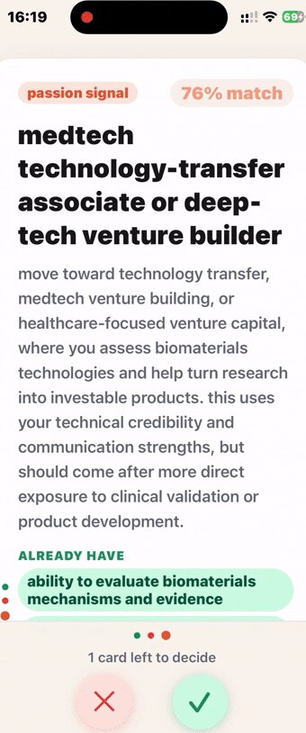

your degree isn't your script
Go Offscript is a career app for students and grads. Take the four-step tour below and see what Nova finds for you. No sign-up needed.

drop your CV
Upload a PDF in any format. Nova reads it and pulls out your real skills in seconds, including the ones you would never think to list.
Try it: press upload.
chat with Nova
A short chat about your values, style and ambitions. Less quiz, more smart friend who has read your CV properly.
Try it: pick what matters to you.
swipe your paths
Nova deals you career paths, each with a match rate, the skills you already have and what needs work. Keep the ones that feel like you, skip the rest.
Try it: tick or cross, or swipe the card.
find your way in
For the paths you kept, Nova finds jobs, events from Luma, fellowships and the people already doing the work, with your first message drafted.
Try it: switch between the tabs.
Sam R., example mentor
Associate at a medtech venture studio
good questions
Is that really the app? The tour uses example CVs and paths. In the app, everything comes from your own CV and your chat with Nova.
What does it cost? Early birds get their first week free. No payment to reserve, one free week per email.
When can I use it? When the app launches. We email the activation details to the address you reserved with.
Lost your code? It is saved with your email. At launch, sign up with the same email and your free week fills in automatically.
What do you keep? Your email, code, consent and when you reserved, only to hold your week. Stop emails or delete it any time through support. See the privacy policy.
your first week is on us
Liked the taste? Reserve a free week now and use it when the app opens.
admit oneone free week per email
valid at launchdetails by email
no paymentto reserve or to try
your codeshown right after you reserve